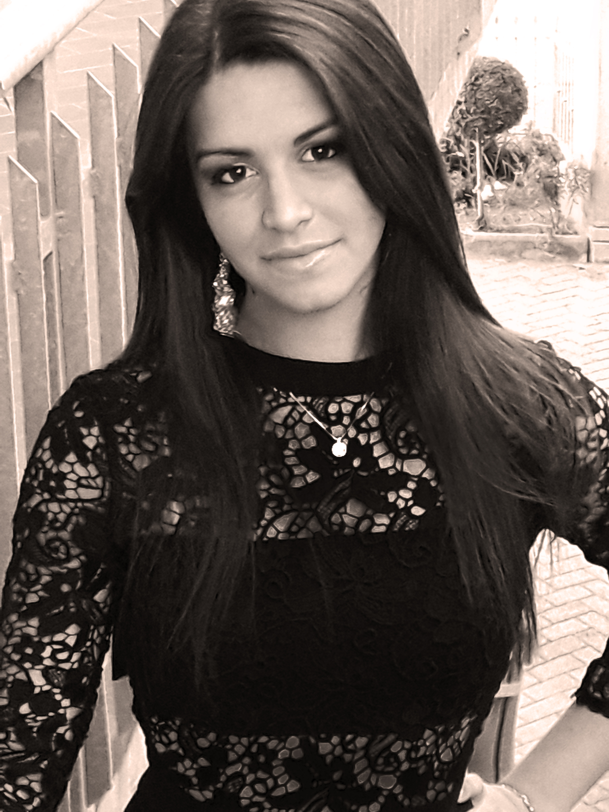
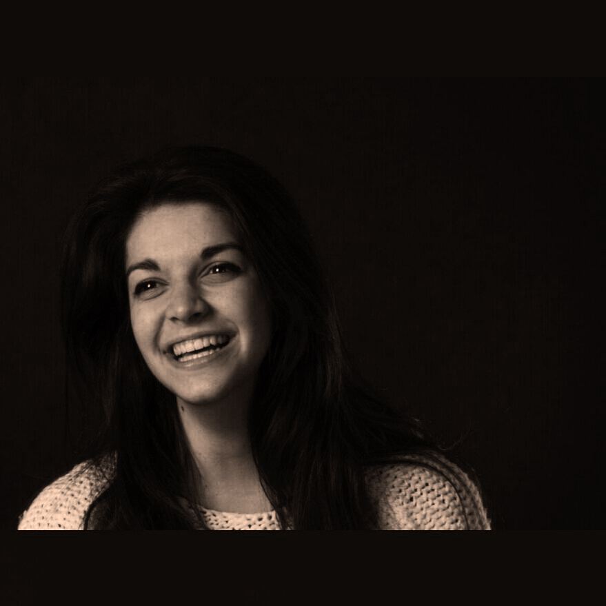
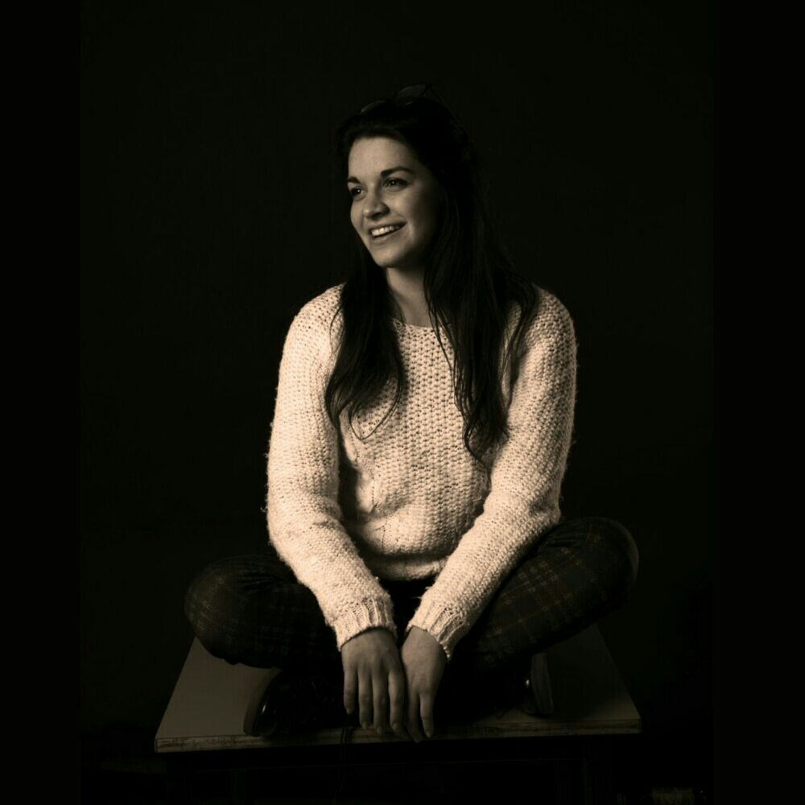

About me

About me

I'm Beatrice Ferrari was born near Reggio Emilia in March 1998.
If I had to describe myself in 3 words, I would choose curious, creative and determined. I like to discover new things and I'm enchanted by everything. I am also determined to achieve the goals that I set myself and I like to face new challenges and I often look for alternative solutions to my problem, out of the box. I still remember when I wanted to make a pocket to the nursery school's diary and I cut a piece of cloth from my mother's skirt because it had the same diary's colors.
At school I was good both in humanities and in science, but the artistic subjects amused me more. I graduated with 100 in high school "Blaise Pascal" of Reggio Emilia, in graphic branch: these years have given me a lot of satisfaction on a human and professional level, allowing me to grow From September 2017 I attend the degree course in Communication Design at the Milan’s Politecnico. My goal is to turn a passion into a job.